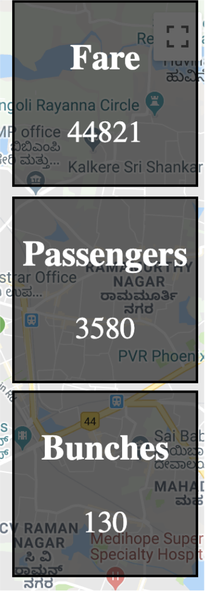
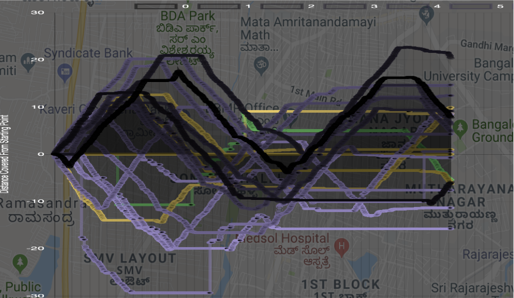

<!DOCTYPE html>
<html lang="en-us"><head>
    <meta charset="utf-8">
    <title>Nithya Shikarpur</title>

    <!-- mobile responsive meta -->
    <meta name="viewport" content="width=device-width, initial-scale=1, maximum-scale=1">
    <meta name="description" content="Website of Nithya Shikarpur"> 
    <meta name="author" content="Nithya Shikarpur"> <meta name="generator" content="Hugo 0.84.0" /> 
    <!-- plugins --> 
    <link rel="stylesheet" href="https://snnithya.github.io/plugins/bootstrap/bootstrap.min.css "> 
    <link rel="stylesheet" href="https://snnithya.github.io/plugins/slick/slick.css "> 
    <link rel="stylesheet" href="https://snnithya.github.io/plugins/themify-icons/themify-icons.css "> 
    <link rel="stylesheet" href="https://snnithya.github.io/plugins/venobox/venobox.css ">  
    <!-- Main Stylesheet --> 
    <link rel="stylesheet" href="https://snnithya.github.io/scss/style.min.css" media="screen"> 
    <!--Favicon-->
    <link rel="shortcut icon" href="https://snnithya.github.io/images/favicon.png " type="image/x-icon">
    <link rel="icon" href="https://snnithya.github.io/images/favicon.png " type="image/x-icon"> 
    <!-- google analitycs -->
    <script>
        (function(i, s, o, g, r, a, m) {
            i['GoogleAnalyticsObject'] = r;
            i[r] = i[r] || function() {
                (i[r].q = i[r].q || []).push(arguments)
            }, i[r].l = 1 * new Date();
            a = s.createElement(o),
                m = s.getElementsByTagName(o)[0];
            a.async = 1;
            a.src = g;
            m.parentNode.insertBefore(a, m)
        })(window, document, 'script', '//www.google-analytics.com/analytics.js', 'ga');
        ga('create', 'Your ID', 'auto');
        ga('send', 'pageview');
    </script>

</head><body>
<!-- preloader start -->
<div class="preloader">
  
</div>
<!-- preloader end -->
<!-- navigation -->
<header class="navigation">
  <div class="container">
    
    <nav class="navbar navbar-expand-lg navbar-white bg-transparent border-bottom pl-0">
      <a class="navbar-brand mobile-view" href="https://snnithya.github.io/"></a>
      <button class="navbar-toggler border-0" type="button" data-toggle="collapse" data-target="#navigation">
        <i class="ti-menu"></i>
      </button>

      <div class="collapse navbar-collapse text-center" id="navigation">
        <div class="desktop-view">
          <ul class="navbar-nav mr-auto">
            
            <li class="nav-item">
              <a class="nav-link" href="https://www.youtube.com/channel/UCV4W-AUWGoYCenk24UJ5hEQ"><i class="ti-youtube"></i></a>
            </li>
            
            <li class="nav-item">
              <a class="nav-link" href="https://www.instagram.com/snnithya"><i class="ti-instagram"></i></a>
            </li>
            
            <li class="nav-item">
              <a class="nav-link" href="https://www.github.com/snnithya"><i class="ti-github"></i></a>
            </li>
            
            <li class="nav-item">
              <a class="nav-link" href="https://www.linkedin.com/snnithya"><i class="ti-linkedin"></i></a>
            </li>
            
          </ul>
        </div>

        <a class="navbar-brand mx-auto desktop-view" href="https://snnithya.github.io/"></a>

        <ul class="navbar-nav">
          
          
          <li class="nav-item">
            <a class="nav-link" href="https://snnithya.github.io/portfolio">Portfolio</a>
          </li>
          
          
          
          <li class="nav-item">
            <a class="nav-link" href="https://snnithya.github.io/cv">CV</a>
          </li>
          
          
          
          <li class="nav-item">
            <a class="nav-link" href="https://snnithya.github.io/about">About</a>
          </li>
          
          
          
          <li class="nav-item">
            <a class="nav-link" href="https://snnithya.github.io/contact">Contact</a>
          </li>
          
          
        </ul>

        
        <!-- search -->
        <div class="search pl-lg-4">
          <button id="searchOpen" class="search-btn"><i class="ti-search"></i></button>
          <div class="search-wrapper">
            <form action="https://snnithya.github.io//search" class="h-100">
              <input class="search-box px-4" id="search-query" name="s" type="search" placeholder="Type & Hit Enter...">
            </form>
            <button id="searchClose" class="search-close"><i class="ti-close text-dark"></i></button>
          </div>
        </div>
        

        
      </div>
    </nav>
  </div>
</header>
<!-- /navigation -->

<section class="section-sm">
    <div class="container">
        <div class="row">
            <div class="col-lg-8 mx-auto">
                
                <a href="/categories/technical-projects" class="text-primary">Technical projects</a> 
                <h2>Bus Bunching Analysis and Visualisation</h2>
                <div class="mb-3 post-meta">
                    <span>By Nithya Shikarpur</span> 
                    <span class="border-bottom border-primary px-2 mx-1"></span>
                    <span>19 July 2019</span> 
                </div>
                
                <div class="content mb-5">
                    <p>During a summer internship at <a href="https://cistup.iisc.ac.in/">Centre for infrastructure, Sustainable Transportation and Urban Planning (CiSTUP)</a>, Indian Institute of Sciences (IISc), Bangalore from May 2019 - July 2019, I worked on the visualisation and analysis of a phenomenon called bus bunching using data collected from BMTC buses in Bangalore. I was fortunate to work with <a href="http://civil.iisc.ac.in/~tarunr/">Prof. Tarun Rambha</a> who helped me navigate through domain knowledge that I wasn&rsquo;t very familiar at the time.</p>
<h3 id="bus-bunching">Bus Bunching</h3>
<p>In public transport, bus bunching refers to the situation when 2 or more buses of the same route having evenly spaced schedules end up at the same place at the same time. For this, 1 or more buses have to violate their schedule. Causes for this could include traffic congestion, extra time taken by passengers to board or deborad the bus or temporary breakdowns of buses while on route. Effects of bus bunching can get magnified very easily. For instance, when two buses get bunched, the first bus usually gets overcrowded and the second goes near-empty. This becomes a vicious cycle that cannot be broken. This ultimately leads to inconsistent waiting times, not allowing passengers to fully rely on the bus system for their transport.</p>
<figure><figcaption>
            <p>Depiction of the effects of bus bunching. Taken from this <a href="https://guernseydonkey.com/wp-content/uploads/2015/12/Bunching.jpg">link</a>.</p>
        </figcaption>
</figure>

<h3 id="data">Data</h3>
<h4 id="bmtc">BMTC</h4>
<p>Bangalore Metropolitan Transport Corporation (BMTC) is a government agency that controls public transport bus service in Bengaluru.</p>
<h4 id="types-of-data-collected">Types of Data Collected</h4>
<p>We had access to ticketing and GPS data for a year from BMTC buses of multiple routes. Due to time constraints, I focused only on the data from January 1st, 2018. In addition, I chose only one route, with the most trips on this day - route #248 (Krishna Rajendra Market to Jalahalli Cross).</p>
<h3 id="visualisation">Visualisation</h3>
<figure><figcaption>
            <p>Picture of visualisation of data</p>
        </figcaption>
</figure>

<p>I have explained the meaning of all the components represented on the visualisation.</p>
<h4 id="markers">Markers</h4>
<p>Each marker represents a bus and is numbered in serial order. Buses bunched are green in
colour and the other ones are red in colour.</p>
<h4 id="route-variables">Route Variables</h4>
<ol>
<li>Fare - Total fare collected by all buses on the route at a given point of time.</li>
<li>Passengers - Total number of passangers that have boarded any bus on the route at a given point of time.</li>
<li>Bunches - Number of bunching instances. Here, bunching instance is defined as an instant when 2 buses are travelling in the same
direction but are within a certain bunching radius (in this case, 100m). Once a pair of
buses undergo bunching in a particular trip, they are not counted again thus preventing
double counting.
<figure><figcaption>
            <p>Route variables</p>
        </figcaption>
</figure>
</li>
</ol>
<h4 id="time-factor">Time Factor</h4>
<p>Time factor is defined as the number of seconds from the live data displayed per second in the
simulation. This value can range from 10 to 1000.
<figure><figcaption>
            <p>Time factor</p>
        </figcaption>
</figure>
</p>
<h4 id="bus-data">Bus Data</h4>
<p>It has the total fare collected and total number of passengers that have boarded the bus. The
colour of the row changes based on whether it is bunched or not.
<figure><figcaption>
            <p>Bus data</p>
        </figcaption>
</figure>
</p>
<h4 id="space-time-plot">Space Time Plot</h4>
<p>This a graph with the time passed on the X-axis and the distance travelled by the bus on the
Y-axis (Distance is positive for the UP direction and negative for the DOWN direction). Each
line plotted represents a diferent bus on the route.
When two lines are parallel, it can be interpreted that they are consistently travelling with an
even space between each other. However, when the lines intersect, we can see that they have
bunched.
<figure><figcaption>
            <p>Space Time Plot</p>
        </figcaption>
</figure>
</p>
<p>I used MySQL, Javascript (ChartJS), HTML and Python (pandas and modin) for this project. All the code associated along with a more detailed report can be found <a href="https://github.com/snnithya/Bus-Bunching">here</a></p>

                </div>

                
                
            </div>
        </div>
    </div>
</section>


<footer class="text-capitalize">
    <div class="container">
        <div class="row justify-content-center" style="display: inline-flex;">
            <div class="col-12 text-center mb-5">
                <a href="https://snnithya.github.io/"></a>
            </div>
            
            <div class="col-lg-3 col-sm-6 mb-5">
                <h6 class="mb-4">Contact Me</h6>
                <ul class="list-unstyled">
                     
                    <li class="mb-3"><i class="ti-location-pin mr-3 text-primary"></i>Bengaluru, India</li>
                     
                    <li class="mb-3"><a class="text-dark" href="mailto:snnithya@gmail.com"><i
                class="ti-email mr-3 text-primary"></i>snnithya@gmail.com</a> 
                    </li>
                </ul>
            </div>
            
            <div class="col-lg-3 col-sm-6 mb-5">
                <h6 class="mb-4">Social Contacts</h6>
                <ul class="list-unstyled">
                    
                    <li class="mb-3"><a class="text-dark" href="https://www.youtube.com/channel/UCV4W-AUWGoYCenk24UJ5hEQ">youtube</a></li>
                    
                    <li class="mb-3"><a class="text-dark" href="https://www.instagram.com/snnithya">instagram</a></li>
                    
                    <li class="mb-3"><a class="text-dark" href="https://www.github.com/snnithya">github</a></li>
                    
                    <li class="mb-3"><a class="text-dark" href="https://www.linkedin.com/snnithya">linkedin</a></li>
                    
                </ul>
            </div>
            <div class="col-lg-3 col-sm-6 mb-5">
                <h6 class="mb-4">Categories</h6>
                <ul class="list-unstyled">
                    <li class="mb-3"><a class="text-dark" href="/categories/music">Music</a>
                    </li>
                    <li class="mb-3"><a class="text-dark" href="/categories/research">Research</a>
                    </li>
                    <li class="mb-3"><a class="text-dark" href="/categories/technical-projects">Technical projects</a>
                    </li>
                </ul>
            </div>
            <div class="col-lg-3 col-sm-6 mb-5">
                <h6 class="mb-4">Quick Links</h6>
                <ul class="list-unstyled">
                    
                    <li class="mb-3"><a class="text-dark" href="https://snnithya.github.io/about">About</a></li>
                    
                    <li class="mb-3"><a class="text-dark" href="https://snnithya.github.io/portfolio">Portfolio</a></li>
                    
                    <li class="mb-3"><a class="text-dark" href="https://snnithya.github.io/contact">Contact</a></li>
                    
                </ul>
            </div>
            <div class="col-12 border-top py-4 text-center">
                | copyright © 2021 <a href="https://themefisher.com/hugo-themes/">Themefisher</a> All Rights Reserved |
            </div>
        </div>
    </div>
</footer>

<script>
    var indexURL = {
        {
            "index.json" | absURL
        }
    }
</script>

<!-- JS Plugins --> 
<script src="https://snnithya.github.io/plugins/jQuery/jquery.min.js"></script>

<script src="https://snnithya.github.io/plugins/bootstrap/bootstrap.min.js"></script>

<script src="https://snnithya.github.io/plugins/slick/slick.min.js"></script>

<script src="https://snnithya.github.io/plugins/venobox/venobox.min.js"></script>

<script src="https://snnithya.github.io/plugins/search/fuse.min.js"></script>

<script src="https://snnithya.github.io/plugins/search/mark.js"></script>

<script src="https://snnithya.github.io/plugins/search/search.js"></script>
 <!-- Main Script --> 
<script src="https://snnithya.github.io/js/script.min.js"></script>


<script src="https://cdnjs.cloudflare.com/ajax/libs/js-cookie/2.2.1/js.cookie.min.js"></script>
<div id="js-cookie-box" class="cookie-box cookie-box-hide">
    This site uses cookies. By continuing to use this website, you agree to their use. <span id="js-cookie-button" class="btn btn-sm btn-primary ml-2">I Accept</span>
</div>
<script>
    (function($) {
        const cookieBox = document.getElementById('js-cookie-box');
        const cookieButton = document.getElementById('js-cookie-button');
        if (!Cookies.get('cookie-box')) {
            cookieBox.classList.remove('cookie-box-hide');
            cookieButton.onclick = function() {
                Cookies.set('cookie-box', true, {
                    expires: {
                        {
                            site.Params.cookies.expire_days
                        }
                    }
                });
                cookieBox.classList.add('cookie-box-hide');
            };
        }
    })(jQuery);
</script>


<style>
    .cookie-box {
        position: fixed;
        left: 0;
        right: 0;
        bottom: 0;
        text-align: center;
        z-index: 9999;
        padding: 1rem 2rem;
        background: rgb(71, 71, 71);
        transition: all .75s cubic-bezier(.19, 1, .22, 1);
        color: #fdfdfd;
    }
    
    .cookie-box-hide {
        display: none;
    }
</style>
</body>

</html>